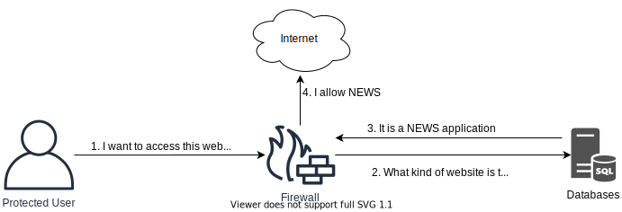

Cyber Security Firewalls
The Dark Web
Firewalls are a central architectural element to any network. They are designed to keep out all network traffic, except traffic which we allow. Firewalls operate on Layer 4, typically controlling TCP and UDP access to internal assets. Next-Generation Firewalls operate on all the layers of the OSI model, including Layer 7.
Traffic entering a network, e.g. through a Firewall, is called ingress traffic. Traffic leaving is called egress.
Layer 4 Firewall
The traditional Firewall is a Layer 4 Firewall with features such as:
- NAT
- Routing
- Blocking or Allowing traffic
- Track active network connections
- Support VPN connections
Note: These Firewalls are typically cheaper and offers more throughput on the network than a more modern Next-Generation Firewall.
NGFW ("Next-Generation Firewalls")
A modern Firewall has capabilities that range much wider than a a Layer 4 Firewall. These capabilities are typically security features.
A NGFW Firewall can also track active network connections, but is also typically capable of tracking:
- Locations via geo-location databases. This means the Firewall can make blocking or allow actions based on the location of users. Location services are not always accurate and can often easily be bypassed using VPN services or by using other services like jump stations for attacks.
- Users
- Applications
- Sessions
- Ports and services
- IP addresses
Other features of a NGFW includes:
- Identify and control applications on the network
- It can be virtualized to run as a software Firewall.
- Often offers simple and intuitive management.
- Supports protecting against known threats via ("Intrusion Prevention System").
- Potential to detect and prevent unknown threats via sandboxing solutions.
- Offers a potential to manage unknown traffic, e.g. traffic which cannot be attributed to an application.
- Capabilities to terminate and inspect encrypted traffic.
- an control users, not just system via respective IP addresses.
Note: Which features your NGFW comes with often greatly depends on which licenses have been purchased and the capacity of the hardware running the Firewall.
Firewall Administration
A Firewall can typically be administered via a proprietary management application, or via a web-browser accessing the Firewalls management via HTTP.
Management ports to Firewalls, including other management services of an organization, should ideally be segmented away from regular user access. Ideally the segmentation of management services is connected to an organizations user directory, for example Active Directory for Windows environments.
Segmentation
Firewalls can segment traffic between hosts and systems into segments, sometimes called zones. Each segment holds services which are allowed to communicate between one another.
Any connection to or from the segment should be carefully controlled by the Firewall, preventing any unauthorized connections to make successful connections. Smaller segments offer more segregation, but requires more management.
Without any segmentation, users and systems can talk directly to each other without the Firewalls enforcement. This is called a flat network.
Note: A very common user directory is Microsoft's Windows Active Directory. It holds information about which users, computers and groupings the organization holds.
The best and most secure kind of segmentation is called zero-trust architecture, forcing all systems on the network to explicitly be allowed to communicate to different services.
To ease management of Firewall rules, the Firewall management is ideally connected to the organizations user directory. This can allow Firewall administrators to create careful rules based on employee responsibilities, allowing the organization to add and remove permissions which are applied on the network without asking the Firewall administrators for changes anytime there is a role change. This is sometimes called user-based policy control. Examples include:
- IT-Administrators should be able to use management protocols to the different services.
- HR employees should be allowed to access HTTPS to the HR platforms.
- Helpdesk employees can only access helpdesk related services.
- Unrecognizable users can be identified and provisioned accordingly.
Note: A very common user directory is Microsoft's Windows Active Directory. It holds information about which users, computers and groupings the organization holds.
IPS ("Intrusion Prevention System") and IDS ("Intrusion Detection System")
Sometimes IPS and IDS systems are deployed as stand-alone systems on the network, but very often they are included in a NGFW.
IPS and IDS systems have signatures, algorithms and heuristics to detect attacks on the network or host. An IDS or IPS deployed on a host is called a HIDS ("Host Intrusion Detection System").
In this course the term IDS and IPS is used interchangeably as the difference between them is often just a matter of configuration of how they operate. An IPS system is positioned in such a way it can detect and block threats, while an IDS system is only capable of detecting threats.
IPS systems can be used to detect and block attackers and often rely on frequent updates and inspection in encrypted traffic.
Note: A very useful feature of IDS and IPS is the frequent updates of new signatures of developing threats from the vendors. This allows defenders some reassurance that new threats will be blocked as the firewall is updated with new updates.
Content and Application Filtering
The Firewall can make attempts in understanding which applications and content is traversing the network. Such detection can further activate other security features like IPS to protect the systems between the Firewall.
URL Filtering
NGFW can also protect content accessed via HTTP. The Firewall can look up domains in a database containing lists of domains and respective categorization. Firewall can then enforce only acceptable categories of domains are allowed by users, for example news is allowed while gambling is not.
Elements such as domain age and validity could also be checked, preventing users from visiting domains which has recently been created and not yet categorized, or checking for fraudulent activities by analyzing the content of the domain.
Instead of rejecting access to websites, the Firewall could intercept the request and send the user to what is called a captive web portal. On this portal the user could be warned about immediate danger or the violation of company policy in e.g. visiting unacceptable content. In some cases you could allow the user to provide a reason why they need to access the content, then let them continue if they have provided a reason.
Categories within domains can be many, for example websites hosting content related to:
- Hacking
- Nudity
- Violence
- Phishing
- Dating
- Instant Messaging
- Entertainment
- Anonymizing services

Applications
The Firewall can try to determine which applications are in use, not just the protocols. Many protocols are capable of carrying other applications, for example HTTP can hold thousands of different applications. A Firewall can try to decode the network streams on Layer 4 and try to determine the content which is presented on Layer 7.

A screenshot shows what a user could see when an application has been blocked.

Content Control
As Applications are being identified, the Firewall could try to reveal specific content within the applications, for example content being downloaded:
- Word documents
- Executables
- Source-code
- Scripts
In such files, the Firewall can try to identify malware, proprietary and confidential information not supposed to leave the network and much more.
The Firewall could support many different protocols and the content running through them, for example:
- HTTP
- SMB
- FTP
- IMAP & POP3
- SMTP
WAF ("Web Application Firewall")
While Firewalls can do a decent job, they often lack full understanding of what a protocol is capable off. Because of such, protocol specific firewalls are also developed where WAF is one of the more common ones.
A WAF allows more features specific to the HTTP protocol than a regular Firewall, making it more capable of stopping threats.
While a WAF tries to do a good job in blocking threats on HTTP, it often provides other very useful utilities for organizations making them very viable for much more than just blocking threats. Here are some examples:
- WAF can help build redundancy, that is having multiple servers to present the same service. This allows for for organizations to have a service in a higher available modus, allowing them to put a server offline while the other servers are still capable of serving users trying to access the service. This is useful as concepts like patching often requires you to restart the service, and the redundancy allows users to still access the service.
- A WAF can help enforce best practice security rules, for example a single place to maintain and enforce encryption, multi-factor authentication and other concepts which this class covers.
- It can be used to develop a single front and protection mechanism for multiple web-servers which are behind the WAF.
Note: WAF's are a much more specialized firewall to counter threats on the HTTP protocol. It also typically holds functionality which is very convenient for administrators.